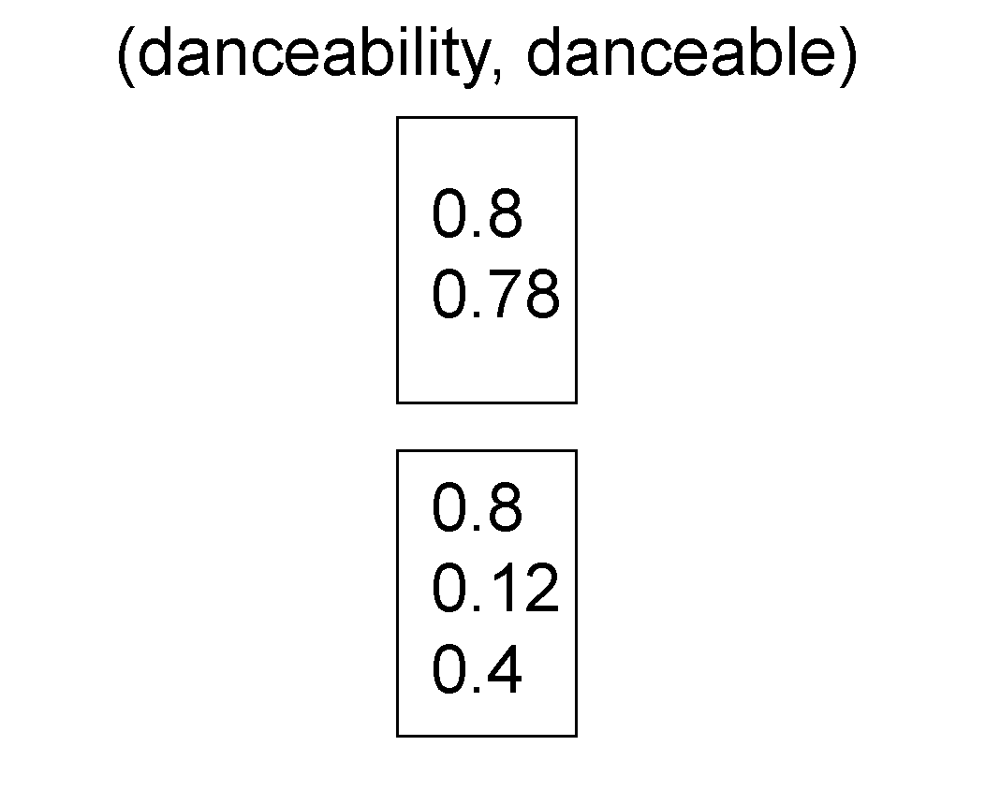
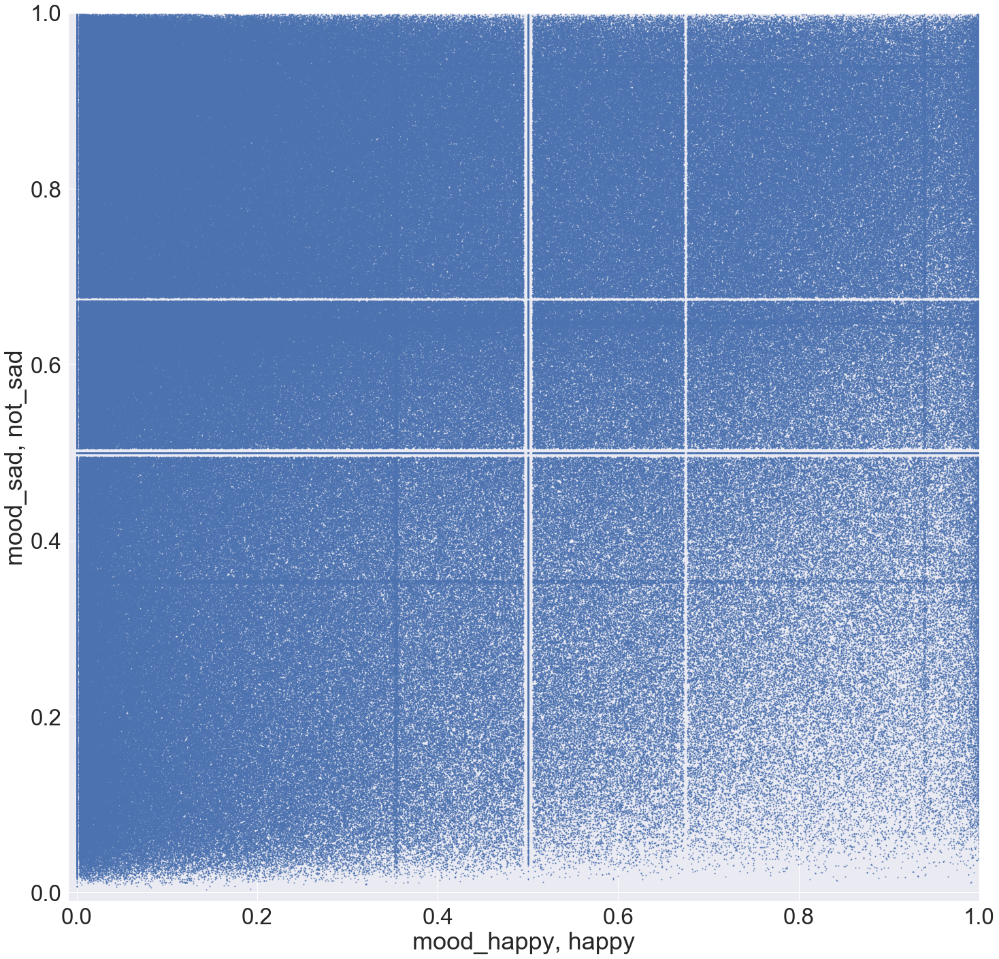
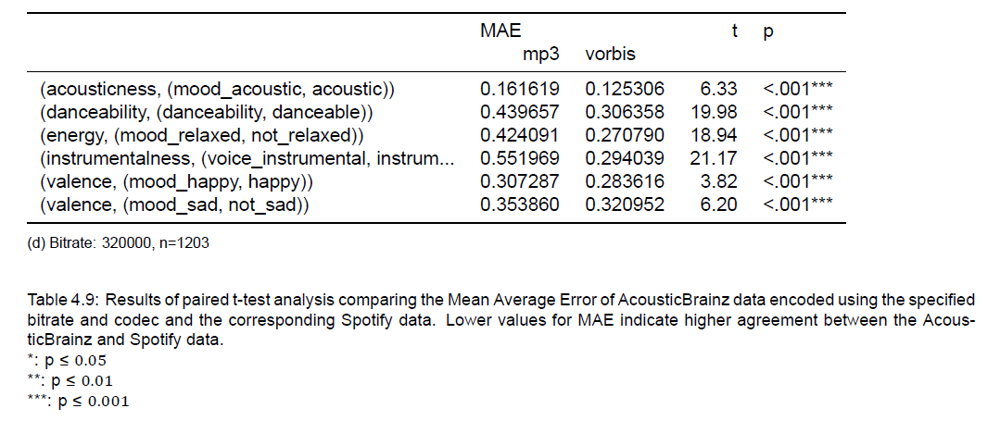
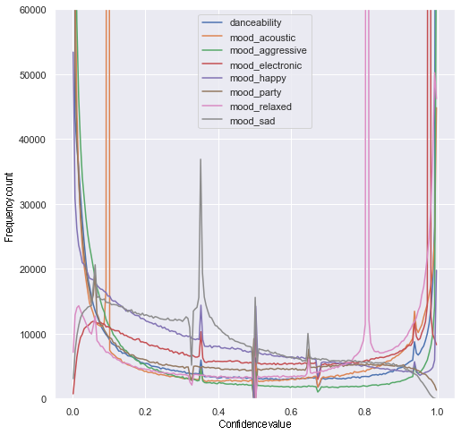
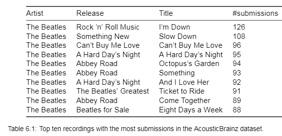
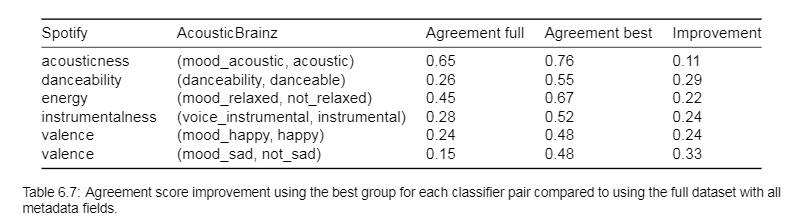
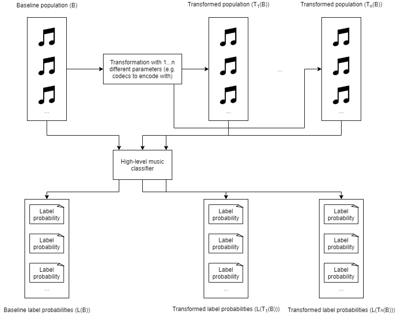
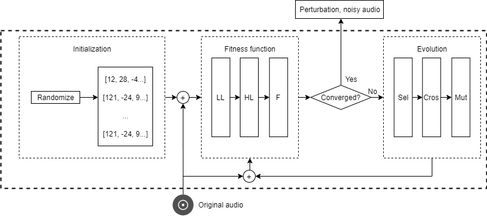

Previous slide Next slide Toggle fullscreen Open presenter view
More than a feeling?
Reliability and robustness of high-level music classifiers
C. Mostert (4473353)
High-level music classifiers?
Automatically annotate music
High-level informationUseful for searching or recommendation
Where to find this information?
Data from Spotify is not very open
Alternatives?
AcousticBrainz to the rescue!
Aims to crowd source information for all music
Very open
More than 20 million submissions!
My assumption...
Multiple submissions should be redundant, right?
What is the problem?Data representation can changelow-level features (Urbano et al., 2014)
What is the problem?Labels can be ambiguous
What is the problem?Modelling emotion requires knowledge from psychology
Which model to use?
Be careful with interpretation
What is the problem?Trained classifiers are not explainable
Then how are we going to measure classifier performance?
Using all data
So the variance gives us information about the stability of this classifier over one recording
How do we use all recordings ?
Pooling the variance

2 v a r ( [ 0.8 , 0.78 ] ) + 3 v a r ( [ 0.8 , 0.12 , 0.4 ] ) 5 \frac{2 \times var([0.8, 0.78]) + 3 \times var([0.8, 0.12, 0.4])}{5}
5 2 v a r ( [ 0 . 8 , 0 . 7 8 ] ) + 3 v a r ( [ 0 . 8 , 0 . 1 2 , 0 . 4 ] )
Formally...
We calculate the pooled variance :
v a r ( c , l ) = i = 1 k ( n i v a r ( ( M B I D i , c , l ) ) ) i = 1 k n i \overline{var}(c,l)=\frac{\Sigma_{i=1}^{k} (n_i \times var((MBID_i, c, l)))}{\Sigma_{i=1}^{k}n_i}
v a r ( c , l ) = i = 1 k n i i = 1 k ( n i v a r ( ( M B I D i , c , l ) ) )
Where n i n_i n i i i i
Formally...
Use information entropy
H ^ ( c ) a l l = l L c P ( ( c , l ) ) l o g L c P ( ( c , l ) ) \hat{H}(c)_{all}=-\Sigma_{l \in L_c}P((c, l))log_{|L_c|}P((c, l))
H ^ ( c ) a l l = l L c P ( ( c , l ) ) l o g L c P ( ( c , l ) )
Where L c L_c L c c c c
Comparing the classifiers
Now we can quantify classifiers based on their stability and 'biasedness':
Comparing the classifiers
Now we can quantify classifiers based on their stability and 'biasedness':
Comparing the classifiers
Now we can quantify classifiers based on their stability and 'biasedness':
Comparing the classifiers
Now we can quantify classifiers based on their stability and 'biasedness':
Why do some classifiers underperform?
Data suggests an influence of bitrate on stability
Of some codecs on stability
And even of the low-level version extractor version used on the stability
Can we define another metric which does not require multiple submissions?
Agreement is very low...
Classifier, label A
Classifier, label B
Pearson r
genre_rosamerica, cla
genre_tzanetakis, cla
0.29
genre_dortmund, blues
genre_tzanetakis, blu
0
genre_rosamerica, roc
genre_tzanetakis, roc
-0.07
And data is distributed unevenly
Related constructs
Classifier, label A
Classifier, label B
Pearson r
mood_aggressive, aggressive
mood_relaxed, not_relaxed
0.59
danceability, danceable
mood_party, party
0.53
mood_happy, happy
mood_sad, not_sad
0.13
More strange distributions

Now we can at least control for the data!

Then what causes these strange distributions?
A closer look at the distributions

Are these peaks caused by differences in data representation?
Main idea: compare anomalous with non-anomalous data
Distance metric
The Jensen-Shannon distance is used as a measure of distributional difference
The square root of the Jensen-Shannon Divergence (Endres & Schindelin, 2003) .(Lin, 1991) .
Distributional differences in metadata
acoustic
relaxed
electronic
sad
bit_rate
.42
.32
.39
.17
codec
.34
.26
.32
.06
length
.15
.15
.15
.32
lossless
.28
.21
.27
.02
essentia_low
.61
.52
.59
.15
essentia_git_sha_low
.67
.58
.66
.23
essentia_build_sha_low
.70
.62
.69
.24
What have we learned?
There are reasons to doubt high-level classifier performance from a theoretical point of view
Stability, agreement and distributional analyses highlight several classifiers that seem to perform poorly and show unexpected patterns
Low-level extractor versions, codec or bitrate used seem to play a role in high-level classifier performance
Where do we go from here?
More controlled experiments
Software testing
Automatic test case generation
Bibliography
Bogdanov, D., Porter, A., Schreiber, H., Urbano, J., & Oramas, S. (2019). The AcousticBrainz genre dataset: Multi-source, multi-level, multi-label, and large-scale. Proceedings of the 20th Conference of the International Society for Music Information Retrieval (ISMIR 2019): 2019 Nov 4-8; Delft, The Netherlands.[Canada]: ISMIR; 2019.
Endres, D. M., & Schindelin, J. E. (2003). A new metric for probability distributions. IEEE Transactions on Information Theory, 49(7), 18581860. https://doi.org/10.1109/TIT.2003.813506
Gong, Y., & Poellabauer, C. (2018). An Overview of Vulnerabilities of Voice Controlled Systems. arXiv:1803.09156 [cs]. http://arxiv.org/abs/1803.09156
Interiano, M., Kazemi, K., Wang, L., Yang, J., Yu, Z., & Komarova, N. L. (2018). Musical trends and predictability of success in contemporary songs in and out of the top charts. Royal Society Open Science, 5(5), 171274. https://doi.org/10.1098/rsos.171274
Lin, J. (1991). Divergence measures based on the Shannon entropy. IEEE Transactions on Information Theory, 37(1), 145151. https://doi.org/10.1109/18.61115
McKeeman, W. M. (1998). Differential testing for software. Digital Technical Journal, 10(1), 100107.
Park, M., Thom, J., Mennicken, S., Cramer, H., & Macy, M. (2019). Global music streaming data reveal diurnal and seasonal patterns of affective preference. Nature Human Behaviour, 3(3), 230236. https://doi.org/10.1038/s41562-018-0508-z
Porter, A., Bogdanov, D., Kaye, R., Tsukanov, R., & Serra, X. (2015). AcousticBrainz: A Community Platform for Gathering Music Information Obtained from Audio. ISMIR.
Russell, J. A. (1980). A circumplex model of affect. Journal of personality and social psychology, 39(6), 1161.
Urbano, J., Bogdanov, D., Boyer, H., Gmez Gutirrez, E., & Serra, X. (2014). What is the effect of audio quality on the robustness of MFCCs and chroma features? Proceedings of the 15th Conference of the International Society for Music Information Retrieval (ISMIR 2014); 2014 Oct 27-31; Taipei, Taiwan. International Society for Music Information Retrieval; 2014. p. 573-578.
Vigliensoni, G., & Fujinaga, I. (2017). The Music Listening Histories Dataset. ISMIR.
Stability analysis
( M B I D 1 , d a n c e a b i l i t y , d a n c e a b l e ) (MBID_1, danceability, danceable) ( M B I D 1 , d a n c e a b i l i t y , d a n c e a b l e )
What about genre differences?
Using the AcousticBrainz genre dataset we can check the distrubtional differences in genre in the peaks
acoustic
relaxed
electronic
sad
Discogs
.12
.09
.11
.11
last.fm .14
.12
.13
.14
tagtraum
.14
.11
.13
.14
Maybe the metadata effects are all due to the changes in underlying data?
Agreement metric allowed for controlling the data
What about the stability metric?
We can make the underlying data more homogeneous

The same general patterns remain visible
If we control for representation, how do the metrics change?
What about agreement?

Low-level extractor versions, codec or bitrate used seem to play a role in high-level classifier performance
Where to go from here?

What about the software?
Each entry has a git-SHA
Use differences in output as indicator
Can then perform differential testing (McKeeman, 1998)
'Stress testing' the trained classifier
No available oracle
Metamorphic relation : output should stay the same for imperceptible change in input
How can we find such perturbations?

In conclusion
Current high-level classifiers should be used with caution
Stop optimizing, start evaluating
Not just relevant for MIR
Use for example pumped up kicks for emotion, or the label 'party', which can be culturally dependent
For consistency, they only looked at the first submission for each MBID, and did note that the codec/bitrate could influence these values. However, journalism then likes to jump to conclusions
Note that y-axis averaged pooled variance over all possible labels
Bottom right is best, lowest bias + highest stability. Many classifiers are either stable and biased or if they are less biased then they also become more stable. In essence, we can see the bias-variance tradeoff often discussed in machine learning. Only some classifiers, like mood_sad or genre_rosamerica seem to be relatively stable **and** unbiased.
Mention we also looked at genres, were all way lower difference so probably not to blame
Mainly to see how the instability of low-level features cascades towards the high-level classifiers
Selecting any combination seemed to benefit the stability
Collect large amount of CD quality audio, transform one of the representational differences at a time and do a proper controlled study. Was now impossible due to the dataset
Essentially show the same input to different versions of the system